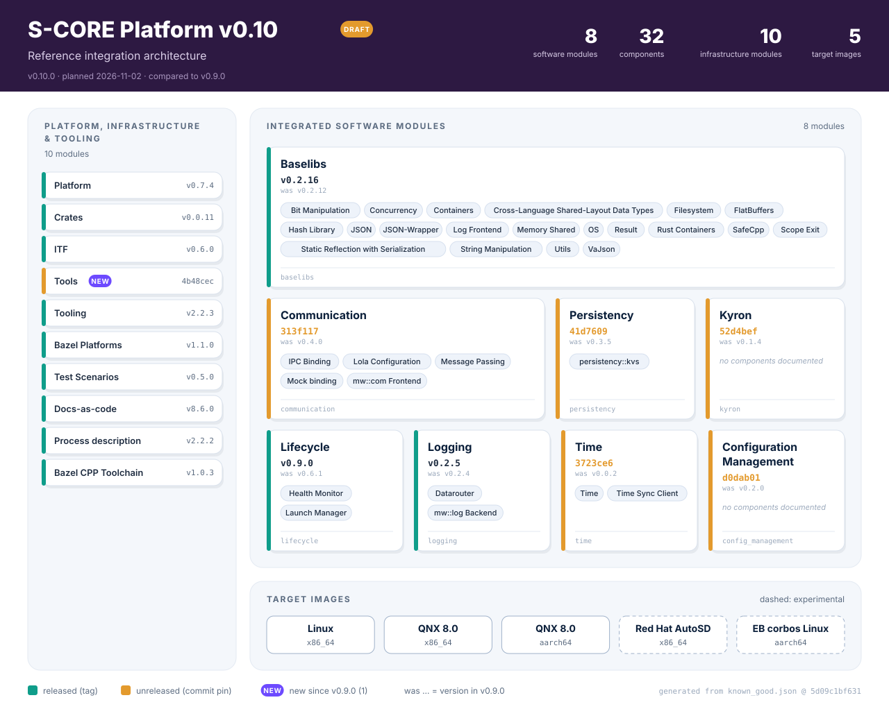

S-CORE Platform v0.10 release note (DRAFT)#
Warning
DRAFT - release in progress. v0.10.0 is not released yet (planned for 2026-11-02). This note shows the current state of the integration and changes until the release is published.
S-CORE v0.10 release note
|
status: draft
security: YES
safety: QM
|
||||
📋 Overview#
This document provides an overview of the changes, improvements, and bug fixes included in the software platform release version v0.10.0 as compared to the previous platform release (v0.9.0).


Fig. 8 Modules, components and images of the reference integration v0.10.0.#
📜 Disclaimer#
This release note does not “release for production”, as it does not come with a safety argumentation and a performed safety assessment. The work products compiled in the safety package are created with care according to a process satisfying standards, but the project, being a non-profit and open source organization, can not take over any liability for its content.
🔄 Changes to the Platform#
✨ New Features#
New infrastructure module: Tools#
score_tools (eclipse-score/tools)
is now part of known_good.json. Persistency’s test BUILD files load
@score_tools//score_pytest, so the reference integration needs it as a
regular dependency
(#388).
Integration Strategy (DR-008) test workflow#
The reference integration no longer runs the unit tests of all modules inside its own workspace. Each target software module now runs its own test suite in its own workspace, against the dependency versions resolved by the reference integration (#398):
scripts/module_tests.py run <module>fetches the module at itsknown_good.jsonpin with the integration patches applied, pins its direct dependencies to the versions of the reference integration (--override_module) and runsbazel coveragewith the shared configuration frombazel_common/unified.bazelrcandbazel_common/unified_toolchains.MODULE.bazel. Coverage builds C++ with clang (LLVM); regular builds stay on GCC.The
module_tests.ymlworkflow runs one job per module and feeds the results into the unit test summary and the documentation.Module-specific test exclusions are documented in the
metadata.test_notesfield ofknown_good.json.If the
UBUNTU_SNAPSHOT_MIRROR_URLsecret is set, the module test jobs download Ubuntu snapshot packages from a mirror first (#429).
Software Bill of Materials (SBOM)#
The reference integration generates an SBOM with
score_sbom 0.1.1 and uploads it
as a CI build artifact
(#304,
#339,
#353).
Reference images#
The QNX images use
score_rules_imagefs0.1.0; host files are placed withrules_pkgpkg_filestargets (#349).The QNX and Linux image definitions were deduplicated into shared packages:
//images/common/apps,//images/qnx_common/buildand//images/qnx_common/configs(#389).The AutoSD image uses a newer AutoSD OCI base image and is pushed on release (#404, #424).
Platform integration tests#
The new //platform_integration_tests:pit suite runs the //showcases
applications for Communication, Kyron, Lifecycle, Logging and Time on the target
image (Docker on Linux x86_64, QEMU on QNX x86_64). Each test is linked to the
platform stakeholder requirement it demonstrates; the platform verification
report shows them in a new “Stakeholder Requirements” chapter
(#377).
Requirement coverage from module tests#
The Lifecycle integration tests, the Logging component tests and the Persistency
component integration tests are executed by the reference integration, so their
PartiallyVerifies/FullyVerifies links appear in the verification reports
(#385).
The Logging tests run after fixing the packaging of the datarouter
configuration
(#387).
Lifecycle control interface for State Managers#
Lifecycle provides the new ILmControl API, with which State Managers
communicate with the Launch Manager over mw::com
(Lifecycle v0.8.0 release notes).
Documentation and reports#
The documentation bundles are generated from
known_good.json(bazel_common/docs_bundles.bzl); the Time documentation is included (#337, #348).Module verification reports (Baselibs, Lifecycle, Logging, Persistency) are linked from a common index; the unit test and coverage summaries are part of the Platform Verification Report; the status dashboard uses branch-aware links (#342, #358, #373).
The Overall Status page was replaced by the Release-wide Progress Overview next to the release notes, with release-over-release charts per module (#392).
The release note is generated from
known_good.jsonwithscripts/release_note/generate_release_note.py(#414).
CI#
💥 Breaking Changes#
Reference integration: resolved-dependency overrides removed#
The module test mechanism of v0.9 was removed together with its generated files:
scripts/known_good/resolved_dependencies.py,
scripts/known_good/module_patches.py and the rust_coverage package
(#398).
Action required: run module tests with scripts/module_tests.py and the
configuration in bazel_common/unified.bazelrc instead.
Reference integration: QNX image packages moved#
The common QNX build fragments and configuration files moved to
//images/qnx_common/build and //images/qnx_common/configs; the
images/qnx_aarch64/configs package was removed and
images/qnx_x86_64/configs keeps only the x86-specific files
(#389).
Action required: update references to the old image paths in derived images.
Platform: stakeholder requirement IDs renamed#
Platform v0.7.4 renamed stkh_req__dependability__safety_features_1 to
stkh_req__dependability__health_management. Tests that still link the old
ID make the documentation build fail with an unknown-link warning
(5d09c1b,
Platform v0.7.4 release notes).
Action required: link tests to the new stakeholder requirement IDs.
Baselibs: vaJson is the only JSON backend#
score/json uses vaJson as its only parser (v0.2.15) and writer (v0.2.16).
The --@score_baselibs//score/json:writer_library flag was removed;
--@score_baselibs//score/json:base_library is a deprecated no-op that this
repository still sets in .bazelrc and known_good.json. The written JSON
differs (for example true/false instead of 1/0 and different
float formatting), which is why two Configuration Management unit tests are
excluded in known_good.json
(Baselibs v0.2.15,
Baselibs v0.2.16,
312fde3).
Action required: remove the base_library and writer_library flags from
build configurations and do not compare JSON output against the old format.
Persistency: KVS API and file format#
The integrated Persistency commit changes the public KVS API that applications use directly:
Kvs::reset_keywas renamed toSetValueToDefault(C++) andset_value_to_default(Rust), without a deprecated alias (persistency#585, 873238a, 0e4c5be).The KVS rejects untagged JSON; a defaults file must use the type-tagged top-level envelope
{"t":"obj","v":{...}}(persistency#490, c37c448).The C++ headers are included as
score/kvs/kvs.h,kvs_builder.handkvs_value.hfrom@score_persistency//score/kvs, and theKvsBuilderflags became enums (Defaults,KvsLoad,WorkingDir). Configuration Management is adapted by a patch in this repository (3467044).
Action required: rename reset_key calls, convert defaults files to the
tagged envelope and update the KVS includes and builder calls.
Lifecycle: Launch Manager configuration in milliseconds#
Lifecycle v0.9.0 renamed all duration fields of the Launch Manager
configuration to integer milliseconds, for example transition_timeout to
transition_timeout_ms and reporting_cycle to reporting_cycle_ms.
Configurations with the old keys fail the schema validation
(a575ce6,
Lifecycle v0.9.0 release notes).
Action required: rename the duration fields to *_ms and convert the values
from seconds to milliseconds.
🎯 Reference Integration scope#
Version:
v0.10.0Source / tag: Reference integration
Release notes: Reference integration release notes
Platform Verification Report: Platform Verification Report (doc__platform_verification_report_latest)
🧩 Integrated Software Modules#
Name |
Version |
Release notes |
Module verification report |
|---|---|---|---|
|
— |
||
|
|||
|
— |
— |
|
|
— |
||
|
— |
— |
|
|
|||
|
|||
|
— |
— |
|
|
— |
— |
🔧 Associated Infrastructure Modules#
Name |
Version |
Release notes |
|---|---|---|
|
||
|
||
|
— |
|
|
||
|
||
|
||
|
||
|
||
|
💿 Images#
Name |
Tarball |
How-to |
Description |
|---|---|---|---|
Reference Linux x86_64 image |
— |
Linux x86_64 Docker image bundling the S-CORE showcases. |
|
Reference QNX x86_64 image |
— |
QNX x86_64 image, run in QEMU. |
|
Reference QNX aarch64 image |
— |
QNX 8.0 aarch64 image, run in QEMU or on Raspberry Pi 4/5. |
|
Reference Red Hat AutoSD Linux image (Experimental) |
— |
Red Hat AutoSD x86_64 image. |
|
Reference Elektrobit corbos Linux for Safety Applications image (Experimental) |
— |
Elektrobit corbos Linux for Safety Applications (aarch64) image. |
🐞 Known Issues/Vulnerabilities and Bug Fixes#
See the release notes of the individual modules.
Safety Package(s) not completed for modules and platform. To qualify the S-CORE platform these gaps must be filled.
🚀 Upgrade Instructions#
Increase to the newest Bazel registry versions: https://eclipse-score.github.io/bazel_registry_ui
Modules shown as (unreleased) are pinned to a commit and have no registry version; use the commit from
known_good.json.The module versions of this release are listed in known_good.json.
📧 Contact Information#
For any questions or support, please contact the Project leads or raise an issue/discussion. https://projects.eclipse.org/projects/automotive.score